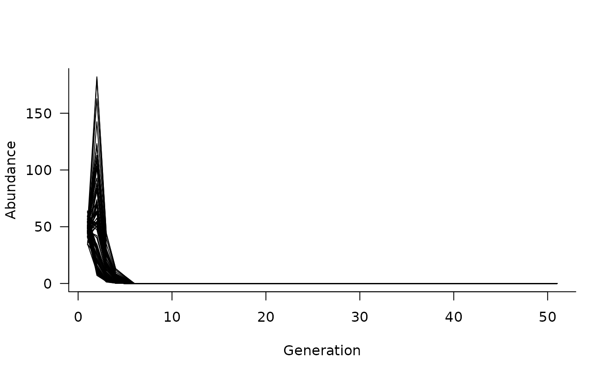

Specify additions or removals from the population vector
that occur before (add_remove_pre) or after the update step
(add_remove_post).
Arguments
- masks
a logical matrix or vector (or list of these) defining cells affected by
funs. See Details andmasks- funs
a function or list of functions with one element for each element of
masks. See Details
Details
add_remove_pre specifies a function that
operates on the population vector prior to the population
update step. Examples might include fatalities (recorded
in absolute numbers), removals, or additions to the
population that occur prior to the update (shifting
from one generation to the next).
add_remove_post is the same as add_remove_pre
but operates on the population vector after the population
update step.
masks are logical vectors with one element for
each class. Additional details on masks are provided
in masks.
funs takes only one argument, the population
abundances n prior (add_remove_pre) or
following (add_remove_post) all other updates in a
given iteration/generation. This allows direct additions
or removals to the population vector, potentially based
on external arguments (e.g., mass mortality events or
harvesting).
Additional arguments to functions are supported and can be
passed to simulate with the args argument.
Examples
# define a population matrix (columns move to rows)
nclass <- 5
popmat <- matrix(0, nrow = nclass, ncol = nclass)
popmat[reproduction(popmat, dims = 4:5)] <- c(10, 20)
popmat[transition(popmat)] <- c(0.25, 0.3, 0.5, 0.65)
# define a dynamics object
dyn <- dynamics(popmat)
# remove up to 10 individuals from stages 4 and 5 prior to the
# matrix update
removals <- add_remove_pre(
masks = all_classes(popmat, dims = 4:5),
funs = \(x) ifelse(x > 10, x - 10, 0)
)
# update the dynamics object
dyn <- update(dyn, removals)
# simulate trajectories
sims <- simulate(dyn, nsim = 100, options = list(ntime = 50))
# and plot
plot(sims)

# remove up to 10 individuals from stages 4 and 5 after to the
# matrix update
removals <- add_remove_post(
masks = all_classes(popmat, dims = 4:5),
funs = \(x) ifelse(x > 10, x - 10, 0)
)
# update the dynamics object (can't update because that will
# include the add_remove_pre as well)
dyn <- dynamics(popmat, removals)
# simulate trajectories
sims <- simulate(dyn, nsim = 100, options = list(ntime = 50))
# and plot
plot(sims)